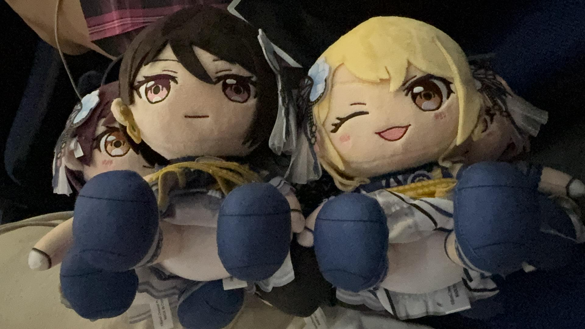
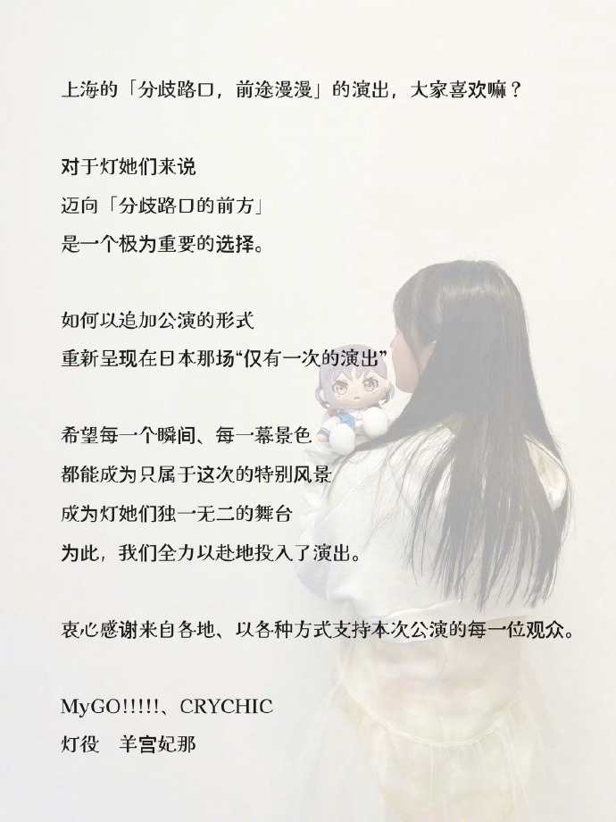

「わかれ道の、その先へ」（「分歧路口，前途漫漫」参战Repo）
最后更新时间:
引言-后日谈（迫真）
“我大概一辈子，也忘不掉鸡狗对邦吧”
鸡狗对邦之后的某日，我换了另一条路前往梅奔中心，先乘坐公交穿过黄浦江，在8号线的站下车，这样便无需换乘直达东方艺术宫站，到站后走下车厢，站台上空荡荡的，没见几位行人。出站来到世博园旁的大街上，看不出来前几日这里曾有过一场盛大的聚会，梅奔中心静静伫立在那里，驻足观望，思绪仿佛又能回到那晚金色的雨。
世博源商场内的快闪店内的周边大都售罄，偶有零星几人在店面附近打卡拍照，除了角色立牌，店面还有专门供娃娃打卡的展板，我冷地一笑，那天我身上一个娃也没带。商场的楼顶非常寂静，没有花篮，没有排队的人群，也没有围成一圈在里面举行某种邪教仪式的“刻板印象长相”的神必人，尤其是戴着印有女声优姓名反光马甲或是“Dream Purple”神必紫色真白头像的。


无人排队周边售罄的快闪店
“你可以回去，但那里已经没有区了”
Day1
从东方艺术宫站出站后，第一眼看到世博源楼顶天台上的一长排花篮，花篮前等待观赏的人排成了长队。送花篮还在社区上闹出了不小的争端，之前倒是有所耳闻，闹斯特麻麻，不如鹰角的大手发力送的花篮，海猫大哥公费追星这一块，降维打击了。
天台上确实有神人在围着的圈里搞神秘仪式，我的反应就跟炫狗看神人视频的反应一样。

炫神难绷鸡狗对邦外场神人
Event1：网友面基这一块
鸡狗对邦行的第一站是微博网友面基，从世博源到会面的麦当劳，见到了来上海后“心心念念”想见的网友们，粉毛头像交大毕业的老学长、一位彩黑网友还有另一位粉毛头像网友。唉，老学长线下见到真人是真帅啊……
我们拿出各自的娃娃放在桌子上大合影，Day1我带了十个娃（鸡团五个、一只香澄、蝶团除了主唱的四个队友，四宫一这一块），阵容更是重量级，隔壁桌的也是来看Live的木柜子痴，也来拍照，我看一堆娃中只有我这儿有一只香澄，便提出让高祖站C位，得到“几十个教授一致认同”。

麦当劳娃娃大集合
准备入场的时候，我邀请几位网友与我一起真人合照，手上拿着代表性的娃，老学长和另一位粉毛网友拿爱音娃，彩黑网友因为现在彩彩的娃还没发售，拿了同是粉毛角色的七深娃娃，而作为高松灯人设的我，手上自然是一个灯娃。

网友带娃合照这一块
我和网友们的故事不可谓不渊远流长，从前跟着黑枪、李建秋刘老师、曹总工在知乎鉴证挖奥利给，后来知乎环境越来越拉，就转进了微博，再进了蜣的Q群，结庐东南山。
随着23年MyGO的爆火，群里或是各路鉴证军事博主底下有了更多木柜子头像的网友，再后来Q群成了邦邦大团体，相比鉴证的吉列豆蒸，还是和网友一起鉴赏木柜子二创，微博上也就逐渐和一些邦邦头像的网友互关。
后来更多的 Live 在闹钟开，于是有了更多线下面基的机会，我这是第一次。恰好有一些网友也常驻上海，以后还会有再见的机会。
Live Day1
Day1买的 660 的位置，在五层看台的第二排，这个位置靠着第一排的栏杆和玻璃，成功把娃放栏杆上进行了一波打卡，鸡团五个娃以壮观的舞台为背景，画面感和场景感自然而然出来了。

栏杆上的娃娃合影
之前看网上讨论，出座位时会不会匹配到会甩手神人，结果我这边是一个cos成CCC时期校服立希的妹子，之后我拿出我的娃摆在外面也是引起旁人注意，恰好那个妹子说自己有一个小白的娃，而我有蝶团剩下四个队友的娃，于是又展示娃娃打卡了。

蝶团四宫一缺主唱这一块
随着开演时间的临近，周围的气氛也热闹了起来。伴随着雨声与大屏上的画面切换，刻在DNA里的这场雨渐渐将在场观众的思绪拉入氛围。

网佐狂喜之左右路线之争这一块
随着一声清脆的 “Here, the World” 响彻全场，Sumimi 形态的李子和反子闪亮登场，这哈酱真是扫月光吧，能登上梅奔这样的大舞台，和观众的互动个人心中是最甜的，难怪能把人掰直（参考文献：喜欢男娘的实验室师兄被反田叶月掰直了）。
后来MyGO和Mujica的成员也陆续登台，“欧耶，我见过羊”，得以线下见到声优本人的尊容，也是让人 High 到不行，后来的MC环节看到立石凛自我介绍了句中文，也是直接开串“凛酱，你终于原谅闹钟了（泪目）”。
有一说一给鸡狗对邦应援调灯色比较简单，Sumimi、MyGO、Mujica和CCC，比较特别的是唱到《天球》的时候，现场从Mujica的红色切成了闪亮的白色，尤其是Day1天球压轴的时候，伴随着现场下起金色的雨，梦回Mujica TV13集放这首歌的救赎感，难忘今宵这一块。
Day1 同时有 CCC 版的春日影和 MyGO 的春日影，也是意料之中地出现了春日影两万闹钟大合唱（然后木谷高明也干了，木谷高明同志发表重要指示力挺春日影大合唱）。

现场下起了金色的雨
而CCC的绿色应该是全场应援灯色最整齐的，官方严选这一块。还看到羊姐的CCC限定六五式军服了，弱水三千、游京、雨夜带刀不带伞，开会带枪不带笔这一块。相较之下，823 Popipa的应援难度就不太友好了。
经典回顾之红袖章羊姐
Event2：校友兄弟再会这一块
与两位从北京远道而来的朋友成功会合了，sizell 兄弟和aikx学长，自从八月份离职离京以后数月，sizell 烫了头发，整了个很帅的发型，他们最近都不太容易，aikx 学长在初创大模型的单位，国庆节忙得没能放假。
sizell老师也是只看Day1，第二天就飞回北京，最近也经常为秋招找工作操劳。他们买票的经历颇有些刺激，考虑到鸡狗在国内的热度，自然一票难求，结果他们找的小代发力了，一波超神拿下了连坐的内场票。
Day1 结束后，走的时候我暗自祈祷 Day2 音响效果能不能好一些，对 MyGO 这边的影响要大一些，羊姐的歌声被这破音响拖累了（结果 Day2 干得更大……），还是李神的数值太高，再破烂的音响效果都压得住。
离开梅奔后，和 sizell 老师、aikx学长汇合后，考虑到附近人多，加上明早 sizell 还要坐飞机，灵性转点选了离虹桥机场和他们下塌处最近的一家海底捞，不用排队这点确实不赖。
这家海底捞里没有看完 Live 的邦批神人，店里有人放周杰伦，结果我神人病毒发作，我上头了也索性也当一次神人，掏出iPad开始放歌，从鸡狗放到老团，最后整了手 TFR 金曲和东南苦行山。
吃着火锅听着歌，本来摆肉盘的架子摆满了娃，摆拍完合影后，我们三人谈天说地，相谈甚欢，从企划聊到声优，再到未来展望，我讲了一个最终幻想，邦十周年纪念在闹钟开追加，全员齐聚。恰逢北航因为“封杀动漫”（禁漫大学这一块）的瓜爆了，结合反田叶月来京开 fmt 的新闻就更难绷了。
除了二偶企划和女声优，其他话题我们也聊了很多，再顺便向他们咨询了一些读研的问题，老友相聚，甚是难得。
从海底捞撤离后，时间临近凌晨一点，sizell 老师和 aikx 学长打车回酒店，而我看着路旁蓝色共享单车和手机地图上的回校路线，邪魅一笑，二十公里车程，在舒适区（迫真），路线也都是主干道大直路，便一路南下回学校了，路上好巧不巧还看到了前两年上班的老东家在上海的分公司。
Half-Time：BanG Dream
那晚我做了个梦，我出现在形似放映厅的地方，恍惚中前面的舞台上站着个人，穿得像是Popipa的演出服，“卧槽，爱美”，不一会，“爱美”从侧门离开了，不知不觉我从那侧门混了进去，后台里staff在忙碌着似乎并不在乎我的出现，然后看到了穿着粉白裙的黑发双马尾和戴着高帽黄红色的，那不就是前岛亚美和伊藤美来吗？我的梦好像中断在了看见认出 hhw 演出服和伊藤美来的那一刻，好一个“日有所思，夜有所梦”啊！
Day2
Live Day2
或许是 Day1 一直站着打 Call 应援加上前一晚通宵吃海底捞再加骑车整太累，上午睡完懒觉起来以后仍然没劲很不在状态，下午睡完午觉慢悠悠地出门，看群里讨论才知道两天开演的时间不同，Day1是晚七点，Day2是晚六点，我一下子慌了，在地铁上的每一秒都那么煎熬，幸好出门不算太晚，到达梅奔检票进场没有迟到。
Day2 坐的 880 的位置比 660 看旋转舞台视角要好一些，只是不像昨天有栏杆摆娃娃了，就如同网上总结的一样，Day2 演出以外的狠活确实密，播片播到母鸡卡第七集的冥场面时，能零星听到有观众爆粗，火药味很大了，我也不禁在想，要是在CCC环节真还原动画，让GO团的几个穿着GO的演出服唱CCC那不是彻底爆了。
有一说一也是意料之中，Day1 开始就有动画名场面的播片，摘难绷假面、CCC 解散黑刀之夜，真要是播一个母鸡卡第七集可能性几乎板上钉钉，只是没想到现场效果能这么爆。
不过最后 Day2 的 CCC 穿的是上 First Take 节目的白衣裙，舞台效果配上灯光还是非常的惊艳。
到梵音打的时候羊姐断气了有几句没声，心想坏了，昨天羊姐C了一天，今天这下子这次要被烤羊了，但我是不想烤，这两天说句羊道话，现场的音响设备确实拉胯，不忍心责怪羊姐，李神能架住是因为李神数值太高了，后面看到羊姐抱着灯娃自己图发的中文推文，直接史诗级大和解。

羊神神了（泪目）
就是这主办方真扫码了，也不知道是昨天观众盗摄多搞这儿报复，到了唱完梵音打压轴的MC环节，硬是大屏放着禁止盗摄的告示不给声优画面，得亏我写轮眼视力好，可以俯看勉强到声优。
MC环节完以后有一说一三次元真人的鸡团比狗团有“团魂”啊（汤圆），按照烂炒的说法，GO的几个人超营业，鸡团又是开小火车”又是搂搂抱抱，特别是李子冲上去抱住反子，鸡团几个随后捅而上，至此已成艺术，简直超神。
离场的时候想到横K第一次鸡狗对邦拍摄到哈酱形似落寞的画面，切片配上“剧终”的模板，再想到反子地偶前途不明的职业生涯，今天节目效果真封神了，这“剧终”的意难平也圆上了，我想到了更好的词，“未竟”，当场才掏出耳机放起了黑悟空《未竟》这首歌。
Event3：羊肉串烤羊这一块
后来和交大现地群的朋友去吃羊肉串，很自然地联想到“烤羊”这一块，我 Day2 轻装上阵只带了鸡团的5个娃，与社旗合影时摆出来了，最开始大家还比较面生没太放开，不知道哪位同学来了句 “Hide”，接上一句 “Hidesuwa”，一下子讨论起出处《Mujica vs My GO 5v3录像》与尼尼孩孩，气氛也活跃起来了。

聚餐烤羊肉串
往好的方面想，Day2早开的好处是结束得早，吃完羊肉串打车回去还没到零点，终于可以早点睡觉。
打赏